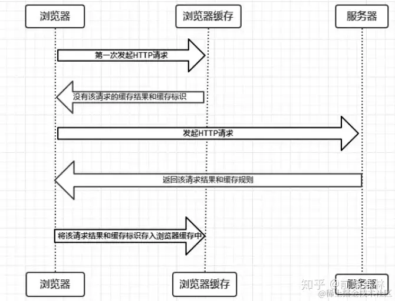

需求开发中不断的往项目中添加图片、字体等这些静态资源使得项目打包体积越来越大。
打包后这些静态资源占据了包体积的大部分。
基于此，我们准备将静态资源从项目中移出来放到 oss 云服务上，这样项目的体积会缩小很多，打包速度也会快很多
但是，想法是好的，但是具体的操作上存在一些问题需要解决：
这篇文章我会重点分享静态资源缓存问题的解决方案。
说到静态资源的缓存问题其实就是 HTTP 缓存的问题，我们既要保证客户端能快速的加载静态资源还需要保证当静态资源变化时，客户端能及时更新。

由上图我们可以发现：
以上两点是浏览器缓存机制的关键，它确保了每个请求的缓存存入与读取。
根据是否需要向服务器重新发起 HTTP 请求将缓存过程分为两个部分，分别是强缓存和协商缓存。
强缓存，顾名思义就是强制缓存，是不需要向原服务器发起请求直接使用浏览器缓存
强缓存的实现方案主要是有两种：Expires 和 cache-control
Expires：过期时间，如果设置了过期时间，则浏览器会在过期时间内使用缓存。Expires 是 HTTP1.0 的产物，受限于本地时间，如果人为修改了本地时间，可能会造成缓存失效。cache-control：缓存控制，常用有以下几个设置：
max-age：表示缓存可以使用多长时间，是一个相对时间public：表示响应可以被任何区缓存private：只针对个人用户，不可被代理服务器缓存no-cache：可以在本地缓存，可以在代理服务器缓存，但是这个缓存要服务器验证才可以使用，强制客户端总是向服务器发送请求，由服务器判断缓存是否可用，即总是启用协商缓存no-store：彻底禁用缓存，每次都需要从服务器获取资源，流量消耗增加Expires 和 cache-control 都可以实现强缓存
资源在 2023 年 2 月 28 号 22:22:22 过期
Expires: Tue, 28 Feb 2023 22:22:22 GMT
资源在 1 小时内可使用缓存
Date: Tue, 22 Feb 2022 22:22:22 GMT
Last-Modified: Tue, 22 Feb 2022 22:00:00 GMT
Cache-Control: max-age=3600
但是 Expires 是 http1.0 的产物，cache-control是 http1.1 的产物，现阶段，我们会认为cache-control使用更广泛，Expires只是一种降级方案。
当 Expires 和 cache-control 同时存在时，浏览器会优先使用 cache-control。
Etag/If-None-Match：
Etag：这个字段是由服务器生成返回给浏览器的，它的值是由文件的索引节点（INode）、文件大小（size）、文件最后修改时间（MTime）进行 hash 之后得到的If-None-Match：再次请求该资源时，带上上一次服务器返回的 ETag 值过程：当强缓存过期，浏览器会启用协商缓存，首先判断当前是否存在 ETag，如果存在，则再次向服务器发送请求时，在请求头上加上If-None-Match 一同发送到服务器，服务器比对当前的 If-None-Match 与资源相对应的 ETag 是否相同，如果相同则说明缓存可用，则返回 304，否则返回最新的资源。
Last-Modified/If-Modified-Since：
Last-Modified：服务器返回的文件最后修改时间If-Modified-Since：再次请求资源是，带上上一次服务器返回的 Last-Modified 值过程：当资源过期时，如果不存在 ETag 而是存在 Last-modified，则再次向服务器发送请求时，在请求头上会带上If-Modified-Since 一同发送给服务器，服务器对比资源最后修改时间和当前客户端发送的 If-Modified-Since 这个时间，判断资源是否被修改，如果修改了则返回最新的资源，如果没有修改则返回 304，使用缓存。
ETag 的优先级高于 Last-Modified, 服务器会优先验证 ETag
Last-Modified 是以秒为单位的，所以在资源频繁更改的情况下，Last-Modified 是不安全的，而 ETag 可以检查文件大小和文件的唯一索引节点，故即使修改频繁的资源依然能检测到更改
基于上面介绍的强缓存和协商缓存特点，以下是笔者总结的缓存策略；
对于频繁变动的资源，肯定首先要保证的就是及时性，即服务器文件更新，需要尽快展示在客户端，所以对于此种资源，建议禁用强制缓存，采用协商缓存的策略。
cache-control: no-cache
Last-Modified: Tue, 22 Feb 2022 22:00:00 GMT
ETag: deadbeef
以上标识中
过程如下：
当浏览器查发现 cache-control: no-cache 时，会向服务器发起该资源的请求
但是在请求前，浏览器会先在自己的缓存中查找该资源， 如果发现存在该资源的缓存文件，则将该缓存文件的Etag和Last-Modified字段转换为请求头中的 If-None-Match 和 If-Modified-Since 一同发送到服务端
如果发现不存在该资源，则直接请求
服务器接收到资源请求，如果不存在 If-None-Match 和 If-Modified-Since 请求头，则说明客户端没有缓存，直接返回资源
如果存在 If-None-Match 和 If-Modified-Since 请求头，服务器比对当前的 If-None-Match 与资源相对应的 ETag 是否相同，如果相同则说明文件没有更改，返回 304 让浏览器使用缓存，如果不相同，返回新文件。
对于不经常变化的资源，建议设置强缓存，
cache-control:max-age=31536000
如上设置会强缓存该资源一年时间，如果我们中间需要修改该资源，可以采用在资源链接末尾添加唯一 hash 或是唯一时间戳来解决。
对于需要缓存的文件，建议明确指出 cache-control 字段，如果没有设置该字段，则浏览器会采用一种叫做启发式缓存的方式缓存文件。
HTTP/1.1 200 OK
Content-Type: text/html
Content-Length: 1024
Date: Tue, 22 Feb 2022 22:22:22 GMT
Last-Modified: Tue, 22 Feb 2021 22:22:22 GMT
如果存在以上响应，不存在 cache-control 字段
试探性地知道，整整一年没有更新的内容在那之后的一段时间内不会更新。
因此，客户端存储此响应（尽管缺少 max-age ）并重用它一段时间。
复用多长时间取决于实现，但规范建议存储后大约 10%（在本例中为 0.1 年）的时间。
由此可见，如果不指明 cache-control 字段会导致不必要的缓存，或是无谓的流量消耗。
所以，建议所有静态资源都明确指出 cache-control 字段，明确缓存策略。